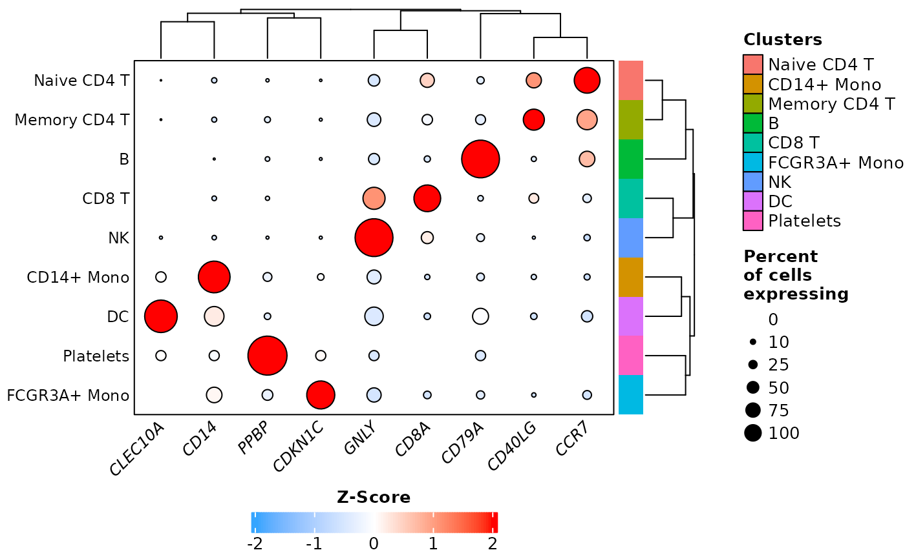

Dot plot or heatmap of average gene expression in each identity
Source:R/DotPlot_Heatmap.R
DotPlot_Heatmap.RdThis function generates a dot plot or a heatmap to visualize the average expression of features in each identity of the active.ident metadata of a Seurat object. Credits to Seurat's dev team for the original DotPlot from which data processing of this function is derived from and to Ming Tang for the initial idea to use ComplexHeatmap to draw a dot plot and the layer_fun function that draws the dots. Various new parameters were added to offer more flexibility and customization.
Usage
DotPlot_Heatmap(
seurat_object,
assay = "RNA",
layer = "data",
data.are.log = TRUE,
features,
split.by = NULL,
idents = NULL,
split.idents = NULL,
scale = TRUE,
rescale = FALSE,
rescale.range = c(0, 3),
rotate.axis = FALSE,
dotplot = TRUE,
dots.type = "square root",
dots.size = 4,
show.noexpr.dots = FALSE,
col.min = ifelse(isTRUE(scale), -2, 0),
col.max = ifelse(isTRUE(scale), 2, "q100"),
data.colors = if (isTRUE(scale)) c("#35A5FF", "white", "red") else "Viridis",
palette.reverse = FALSE,
na.color = "grey40",
background.color = "white",
idents.colors = NULL,
show.idents.names.colors = FALSE,
show.idents.oppo.colors = TRUE,
split.colors = NULL,
show.split.names.colors = FALSE,
show.split.oppo.colors = TRUE,
order.idents = NULL,
order.split = NULL,
order.colors = TRUE,
kmeans.repeats = 100,
cluster.idents = TRUE,
idents.kmeans = 1,
idents.kmeans.numbers.size = 11,
cluster.features = TRUE,
features.kmeans = 1,
features.kmeans.numbers.size = 11,
idents.gap = 1,
features.gap = 1,
idents.names.size = 9,
features.names.size = 9,
features.names.style = "italic",
row.names.side = "left",
row.names.width = 15,
column.names.angle = 45,
column.names.side = "bottom",
column.names.height = 15,
inner.border = TRUE,
outer.border = TRUE,
data.legend.name = ifelse(isTRUE(scale), "Z-Score", "Average Expression"),
data.legend.side = "bottom",
data.legend.direction = "horizontal",
data.legend.position = "topcenter",
data.legend.width = 5,
show.data.legend = TRUE,
idents.legend.name = "Clusters",
show.idents.legend = TRUE,
split.legend.name = split.by,
show.split.legend = TRUE,
legend.title.size = 10,
legend.text.size = 10,
legend.gap = 10,
output.data = FALSE,
...
)Arguments
- seurat_object
A Seurat object.
- assay
Character. The name of an assay containing the
layerwith the expression matrix. If theseurat_objectcontains multiple 'RNA' assays, you may specify which one to use (for example, 'RNA2' if you have created a second 'RNA' assay you named 'RNA2'. See Seurat v5 vignettes for more information). You may also use another assay, such as 'SCT', to pull feature expression from.- layer
Character. The name of a layer (formerly known as slot) which stores the expression matrix. It is recommended to use 'data'.
- data.are.log
Logical. If
TRUE, and iflayer= 'data', the function assumes data are log-transformed and cell expression values will be exponentiated (usingexpm1) so that averaging is done in non-log space (as perDotPlotorAverageExpression's default behavior), average expression values are then log-transformed back (usinglog1p). Iflayer= 'scale.data' or 'counts', cell expression values are not exponentiated prior to averaging.- features
Character. The names of one or several features to plot the average expression from.
- split.by
Character. The name of a metadata (for example, 'orig.ident', 'seurat_clusters', etc) to split the identities of the active.ident metadata by.
- idents
Character. The names of one or several identities in the active.ident metadata to select. If
NULL, all identities are used.- split.idents
Character. The names of one or several
split.byidentities to select. IfNULL, all identities are used. Ignored ifsplit.by=NULL.- scale
Logical. If
TRUE, average expression values will be scaled usingscaleand default parameters. The resulting values will be Z-scores (mean subtracted values divided by standard deviation) and not positive average expression values anymore, which is why there will be positive and negative values displayed, depending on if the average expression in a particular identity is below or above the mean average expression from all identities (which is calculated independently for each feature). Caution should be exercised when interpreting results with low number of identities (typically below five), as small differences in average expression might lead to exacerbated differences when scaled.- rescale
Logical. If
TRUE, average expression values will be adjusted usingrescalebetween the first numerical value ofrescale.range(lowest expression) and the second numerical value (highest expression). This is different thanscaleas this doesn't compare values to any mean and standard deviation and is therefore not a Z-score, it only refits each average expression value (independently for each feature) in order to visualize allfeaturesin the same dimension regardless of their differences in levels of expression. Caution should be exercised when interpreting results with low number of identities (typically below five), as small differences in average expression might lead to exacerbated differences when rescaled. Ignored ifscale=TRUE.- rescale.range
Numeric. The minimum and maximum values to resize the average expression values and internally passed to
rescale. These values are arbitrary and will not change the visualization, only the values in the legend, you need to adjustcol.minandcol.maxto influence the color scale. Ignored ifrescale=FALSEorscale=TRUE.- rotate.axis
Logical. If
TRUE, flips the axis, so thatfeaturesare displayed as rows and identities as columns.- dotplot
Logical. If
TRUE, the function will display a dot plot, with dots size proportional to the percentage of cells in each identity expressing a feature. IfFALSE, the function will instead display a heatmap.- dots.type
Character. Determines the dot size differences between 0 and 100% expression. Either 'square root' (lower difference) or 'radius' (higher difference). Ignored if
dotplot=FALSE.- dots.size
Numeric. The size of the dots. Decreasing this parameter helps when displaying a large number of
features. Ignored ifdotplot=FALSE.- show.noexpr.dots
Logical. If
TRUE, the function will display a small dot forfeatureswith 0% expression, instead of nothing. Ignored ifdotplot=FALSE.- col.min
Character or Numeric. The minimum value for the
breaksinternally passed tocolorRamp2. If character, must be a quantile in the form 'qX' where X is a number between 0 and 100. A value of 'q5' or 'q10' is useful to reduce the effect of outlier values (i.e. a very low value that significantly alters the color scale range of all other values).- col.max
Character or Numeric. The maximum value for the
breaksinternally passed tocolorRamp2. If character, must be a quantile in the form 'qX' where X is a number between 0 and 100. A value of 'q95' or 'q90' is useful to reduce the effect of outlier values (i.e. a very high value that significantly alters the color scale range of all other values).- data.colors
Character or Function. Either three color names, corresponding to the lowest, zero (or middle if
scale=FALSE), and highest values in the expression matrix and internally passed tocolorRamp2, or two color names, corresponding to the lowest and highest values, or the name of a palette and internally passed tohcl_paletteincolorRamp2(such as 'Inferno', 'Berlin', 'Viridis' etc, checkhcl.palsfor all palettes available), or a customcolorRamp2function.- palette.reverse
Logical. If
TRUEand ifdata.colorsis a palette (such as 'Viridis'), the function will reverse its colors.- na.color
Character. The color name for missing values (
NA).- background.color
Character. The color name for the background behind the dots. Ignored if
dotplot=FALSE.- idents.colors
Character. The color names for each identity of the active.ident metadata or in
idents. IfNULL, uses Seurat's default colors.- show.idents.names.colors
Logical. If
TRUE, the function will display the colors specified inidents.colorsnext to identity names.- show.idents.oppo.colors
Logical. If
TRUE, the function will display the colors specified inidents.colorson the opposite side of identity names.- split.colors
Character. The color names for each
split.byidentity or insplit.idents. IfNULL, uses a custom set of colors fromcolors. Ignored ifsplit.by=NULL.- show.split.names.colors
Logical. If
TRUE, the function will display the colors specified insplit.colorsnext to identity names. Ignored ifsplit.by=NULL.- show.split.oppo.colors
Logical. If
TRUE, the function will display the colors specified insplit.colorson the opposite side of identity names. Ignored ifsplit.by=NULL.- order.idents
Character or Numeric. Either 'reverse', or the identities (as names or as numerical values corresponding to the indices) of the active.ident metadata or in
identsto order the cells. Ifcluster.idents=TRUEor Function, only the legend names will be ordered.- order.split
Character or Numeric. Either 'reverse', or the
split.byidentities (as names or as numerical values corresponding to the indices) or insplit.identsto order the cells. Ifcluster.idents=TRUEor Function, only the legend names will be ordered. Ignored ifsplit.by=NULL.- order.colors
Logical. If
TRUE, thedata.colorsandsplit.colorswill automatically be ordered according toorder.identsandorder.split. Ignored iforder.identsandorder.splitareNULL.- kmeans.repeats
Numeric. The number of runs to get a consensus K-means clustering. Ignored if
idents.kmeansandfeatures.kmeansare equal to 1.- cluster.idents
Logical or Function. If
TRUE, the function will cluster the identities. You may also pass anhclustordendrogramobject which contains clustering.- idents.kmeans
Numeric. The number of slices to use for identity K-means clustering.
- idents.kmeans.numbers.size
Numeric. The font size of the identity K-means slice numbers. Set to 0 to remove them.
- cluster.features
Logical or Function. If
TRUE, the function will cluster thefeatures. You may also pass anhclustordendrogramobject which contains clustering.- features.kmeans
Numeric. The number of slices to use for feature K-means clustering.
- features.kmeans.numbers.size
Numeric. The font size of the feature K-means slice numbers. Set to 0 to remove them.
- idents.gap
Numeric. The gap between the identity slices. Ignored if
idents.kmeans= 1.- features.gap
Numeric. The gap between the feature slices. Ignored if
features.kmeans= 1.- idents.names.size
Numeric. The font size of the identity names. Set to 0 to remove them.
- features.names.size
Numeric. The font size of the feature names. Set to 0 to remove them.
- features.names.style
Character. The font face of the feature names. The Gene nomenclature used by almost all scientific journals require that feature names are italicized, therefore the parameter is by default set to 'italic'. Use 'plain' to revert back to regular font face.
- row.names.side
Character. The side where the row names will be displayed, either 'left' or 'right'. The dendrogram will be displayed on the opposite side.
- row.names.width
Numeric. The width of the row names. Increase this parameter if your row names are truncated.
- column.names.angle
Numeric. The angle of rotation of the column names.
- column.names.side
Character. The side where the column names will be displayed, either 'top' or 'bottom'. The dendrogram will be displayed on the opposite side.
- column.names.height
Numeric. The height of the column names. Increase this parameter if your column names are truncated.
- inner.border
Logical. If
TRUE, the function will display a black outline around each dot ifdotplot=TRUE, or a black border around each cell of the heatmap ifdotplot=FALSE.- outer.border
Logical. If
TRUE, the function will display an outer border around the plot or around each slice ifidents.kmeansand/orfeatures.kmeansare higher than 1.- data.legend.name
Character. The name of the data legend.
- data.legend.side
Character. The side where the data legend will be displayed, either 'left', 'right', 'top' or 'bottom'.
- data.legend.direction
Character. The direction of the data legend, either 'horizontal' or 'vertical'.
- data.legend.position
Character. The centering of the data legend name, there are many options, default option from
Heatmapis 'topleft'.- data.legend.width
Numeric. How long the data legend will be, only affects the data legend if
data.legend.direction= 'horizontal'.- show.data.legend
Logical. If
TRUE, the function will display a legend for the average expression data.- idents.legend.name
Character. The name of the active.ident metadata legend. Ignored if
show.idents.names.colorsandshow.idents.oppo.colorsareFALSE.- show.idents.legend
Logical. If
TRUE, the function will display a legend for the active.ident metadata identities oridents. Ignored ifshow.idents.names.colorsandshow.idents.oppo.colorsareFALSE.- split.legend.name
Character. The name of the
split.bylegend. Ignored ifsplit.by=NULL. Ignored ifshow.split.names.colorsandshow.split.oppo.colorsareFALSE.- show.split.legend
Logical. If
TRUE, the function will display a legend forsplit.byidentities orsplit.idents. Ignored ifshow.split.names.colorsandshow.split.oppo.colorsareFALSE.- legend.title.size
Numeric. The font size of all legend titles.
- legend.text.size
Numeric. The font size of all legend texts.
- legend.gap
Numeric. The gap between the legends and the dot plot or heatmap. This parameter sets the value in the global options of
ht_opt, so it will affect allHeatmapobjects in the same R session. Use ComplexHeatmap::ht_opt(RESET =TRUE) to restore default parameters.- output.data
Logical. If
TRUE, the function will return alistcontaining amatrixobject of the average expression data, scaled or not, and anothermatrixobject containing the percentage of cells expressing each feature, instead of displaying anything.- ...
Additional arguments to be passed to
Heatmap, such asshow_parent_dend_line,clustering_method_rows, etc, accepts any parameter that wasn't already internally passed toHeatmap(for example,outer.bordersets theborderparameter ofHeatmap, so you will get an error if you try to pass theborderparameter inDotPlot_Heatmap).
Value
A Heatmap object, either as a dot plot, or a heatmap, or a list containing a matrix object of the average expression data, scaled or not, and another matrix object containing the percentage of cells expressing each feature.
Examples
# Prepare data
pbmc3k <- Right_Data("pbmc3k")
pbmc3k.markers <- c("CCR7", "CD14", "CD40LG",
"CD79A", "CD8A", "CDKN1C",
"GNLY", "CLEC10A", "PPBP")
# Example 1: default parameters
DotPlot_Heatmap(pbmc3k,
features = pbmc3k.markers)
